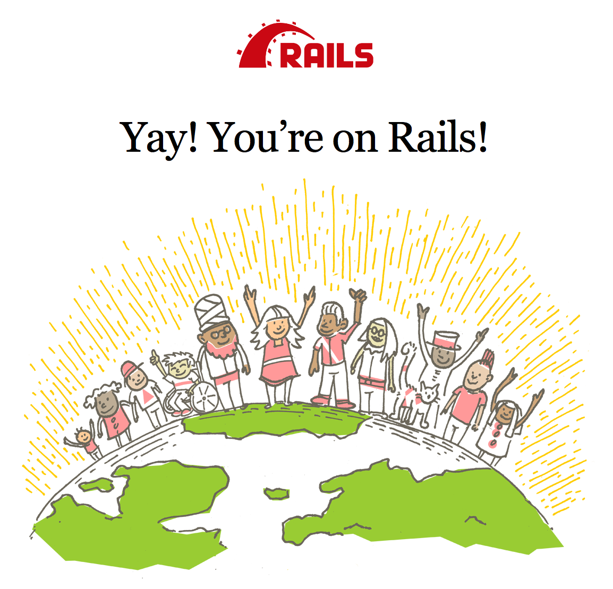
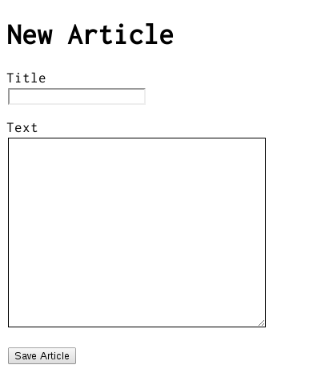
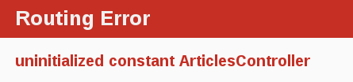
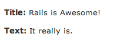

1 가이드에 대한 전제조건
본 가이드 내용은 레일스 애플리케이션을 만들어 본 경험이 없는 초보자를 대상으로 작성되었다. 반드시 레일스에 대한 경험을 필요로 하지 않는다.
레일스는 루비 언어로 만들어진 웹애플리케이션 프레임워크이다. 루비 언어에 대한 사전 지식이 없이 바로 레일스로 작업을 하게 되면 매우 경사진 학습곡선을 경험하게 될 것이다. 아래에 루비 언어를 배우기 위한 온라인 자원에 대한 몇가지 목록을 모아 놓았다.
주의할 것은 위에서 소개한 서적 중에는, 그 내용이 아주 훌륭한 것이지만, 오래된 버전인 루비 1.6과 주로 1.8 버전에 대한 것들이 있어서 레일스로 개발할 때 주로 접하게 되는 루비 문법들이 포함되지 않을 수 있다는 것이다.
2 레일스란 무엇인가
레일스란 루비 언어로 작성된 웹애플리케이션 개발 프레임워크이다. 모든 개발자들이 작업을 시작할 때 필요로 하는 것들이 사전에 준비된 것으로 가정하여 웹애플리케이션을 보다 쉽게 개발할 수 있도록 만들어졌다. 다수의 언어와 프레임워크보다 더 작은 량의 코드를 작성하여 더 많은 것을 구현할 수 있게 해준다. 고급 레일스 개발자들 역시 레일스가 웹애플리케이션 개발을 더 재밋게 해 준다고 말한다.
레일스는 독단적인 측면을 가지는 소프트웨어다. 즉 최선의 방식이 있다고 가정하여 그 방법을 사용하도록 권하지만 경우에 따라서는 다른 대안을 사용하지 않도록 한다. 소위 "레일스 방식"을 배우게 되면 생산성에 있어서 어마어마한 향상을 가져오게 되는 것을 알게 될 것이다. 다른 언어를 사용할 때 익혔던 습관을 레일스 개발시에 버리지 못하거나 다른 곳에서 배웠던 패턴을 그대로 사용하려고 할 경우는 레일스를 사용하므로써 얻게 되는 즐거움을 덜 느끼게 될 것이다.
레일스 철학은 두 개의 중요한 가이드 원칙을 포함한다.
- Don't Repeat Yourself(같은 내용의 정보를 반복하지 말 것): DRY란 하나의 소프트웨어 개발 원칙으로 "모든 지식은 하나의 시스템 내에서 유일해야 하고 모호성이 없어야 하며 권위를 가져야 한다"는 내용을 의미한다. 같은 내용의 정보를 반복해서 작성하지 않으므로써 코드를 더 잘 유지할 수 있고 더 많은 확장성을 부여할 수 있으며 버그를 줄일 수 있게 되는 것이다.
- Convention Over Configuration(설정보다는 관례를 우선시 함): 레일스는 웹애플리케이션에서 발생할 수 있는 다양한 작업들에 대한 최선의 방법을 알고 있기 때문에, 한없이 이어지는 설정파일들을 사용해서 상세한 설정 내용을 명시하는 대신에 이런 것들에 대한 일련의 사전 정의된 설정을 기본 규칙으로 지정해 준다.
3 레일스 프로젝트 생성하기
본 가이드를 읽어가는 최선의 방식은 단계별로 따라서 해 보는 것이다. 모든 단계는 예제 애플리케이션을 실행하는데 필수이며 어떠한 코드나 단계도 추가적으로 필요하지 않다.
본 가이드를 따라하면 blog라는 간단한 웹브로그 프로젝트를 만들게 될 것이다. 프로젝트를 진행하기 전에 각자의 시스템에 레일스가 설치되어 있어야 한다.
아래의 예제에서 사용하는 $ 문자는 유닉스계열의 운영체제에서 터미널 프롬프트로 사용하는 것인데 설정에 따라 다르게 보일 수 있다. 윈도우를 사용할 경우에는 C:\sourc_code와 같이 보일 것이다.
3.1 레일스 설치하기
레일스를 설치하기 전에 각자의 시스템에 레일스 프레이워크에서 사용하는 연관 언어나 프로그램이 설치되어 있는지 확인해야 하는데, 여기에는 루비와 SQLite3 등이 포함된다.
우선 터미널 프로그램을 실행한 후 커맨드라인 프롬프트를 연다. macOS에서는 Terminal.app 프로그램을 실행하고, 윈도에서는 시작 메뉴로부터 "실행(Run)" 명령을 선택한 후 'cmd.exe'라고 입력하여 엔터키를 입력한다. 달러 표시 $ 문자 뒤에 오는 명령은 커맨드라인에서 실행해야 한다. 이어서 이설치된 루비 버전을 확인한다.
$ ruby -v ruby 2.5.0
레일스는 루비 버전이 최소한 2.5.0 이상이어야 한다. 따라서, 이전 버전으로 확인될 경우는 최신버전으로 설치할 필요가 있다.
윈도우 시스템에 레일스를 신속하게 설치하기 위해서는 Rails Installer를 사용할 수 있다. 대부분의 운영체제에서 더 많은 설치 방법을 찾아 보길 원한다면 ruby-lang.org를 살펴보기 바란다.
윈도우에서 작업을 할 경우는, Ruby Installer Development Kit를 추가로 설치해야 한다.
또한 SQLite3 데이터베이스를 설치할 필요가 있다. 많은 사람들이 사용하는 다수의 유닉스계열의 운영체제는 SQLite3 가용 버전이 미리 설치되어 있다. 윈도우에서는 Rails Installer를 이용하여 설치한 경우, 이미 SQLite가 설치되어 있다. 기타 다른 경우에는 SQLite3 웹사이트를 방문하여 설치 안내문을 참고할 수 있다. 제대로 설치되었을 경우 PATH에 경로가 추가되었는지 확인해 보기 바란다.
$ sqlite3 --version
위의 명령을 실행할 경우 버전이 표시되어야 한다.
레일스를 설치하기 위해서는 RubyGems에서 제공하는 gem install 명령을 실행한다.
$ gem install rails
이상의 모든 것이 제대로 설치되었다는 것을 확인하기 위해서 아래의 명령을 실행할 수 있어야 한다.
$ rails --version
"Rails 6.0.0"과 같이 표시된다면 이제 시작할 준비가 된 것이다.
3.2 Blog 애플리케이션 생성하기
레일스에서 기본으로 제공되는 많은 생성자 스크립트를 이용하면 특정 작업에 필요한 모든 것을 자동으로 생성해 주기 때문에 개발을 보다 쉽게 할 수 있다. 이 중에 하나는 애플리케이션을 만들어 주는 생성자 스크립트인데 레일스 애플리케이션의 기본 골격구조를 제공해 주기 때문에 직접 코드를 작성할 필요가 없다. Creating the blog application
이 생성자를 사용하기 위해서는 터미널을 열고 파일을 생성할 권한이 있는 적당한 디렉토리로 이동한 후 아래와 같이 입력한다.
$ rails new blog
이로써 blog 디렉토리에 Blog라는 레일스 애플리케이션이 생성되고 bundle install 명령으로 Gemfile에 명시된 젬들이 설치될 것이다.
Windows Subsystem for Linux(WSL)를 사용할 경우에는 현재 파일 시스템 알림 기능상에 제약점이 발견되어 rails new blog --skip-spring --skin-listen 와 같이 옵션을 추가하여 명령을 실행하여 spring과 listen 젬의 기능을 중단해야 한다.
rails new -h 명령을 실행하면 레일스 애플리케이션 빌더가 사용할 수 있는 모든 커맨드라인 옵션들을 볼 수 있다.
blog 애플리케이션을 생성한 후에는 해당 폴더로 이동한다.
$ cd blog
blog 디렉토리에는 다수의 자동생성된 파일과 폴더가 존재하는데 레일스 애플리케이션의 구조를 반영한 것이다. 본 튜토리얼상의 대부분의 작업은 app 폴더에서 진행할 것이지만 레일스에서 디폴트로 생성한 파일과 폴더의 기능들에 대한 기본 설명을 아래에 기술해 놓았다.
| 파일/폴더 | 용도 |
|---|---|
| app/ | 애플리케이션의 컨트롤러, 모델, 뷰, 헬퍼, 메일러, 채널, 작업 및 애셋을 포함한다. 본 가이드의 나머지 부분에서는 이 폴더에 중점을 둘 것이다. |
| bin/ | 앱을 시작하는 레일스 스크립트를 포함하며 애플리케이션 설정, 업데이트, 배포 또는 실행하는 데 사용하는 스크립트를 포함 할 수 있다. |
| config/ | 애플리케이션의 라우트, 데이터베이스 등을 구성한다. Configuring Rails Applications에 자세히 설명되어 있다. |
| config.ru | 애플리케이션을 시작하는 데 사용되는 랙(Rack) 기반 서버의 랙 구성. 랙에 대한 자세한 내용은 Rack 웹 사이트를 참조한다. |
| db/ | 현재 데이터베이스 스키마와 데이터베이스 마이그레이션이 포함되어 있다. |
| Gemfile Gemfile.lock |
이 파일을 사용하면 레일스 애플리케이션에 필요한 젬(gem) 의존성을 지정할 수 있다. 이 파일은 Bundler 젬에서 사용한다. Bundler에 대한 자세한 내용은 Bundler 웹 사이트를 참조한다. |
| lib/ | 애플리케이션을 위한 확장 모듈. |
| log/ | 애플리케이션 로그 파일 |
| package.json | 이 파일을 사용하면 레일스 애플리케이션에 필요한 npm 종속성을 지정할 수 있다. 이 파일은 Yarn에서 사용한다. Yarn에 대한 자세한 내용은 Yarn 웹 사이트를 참조한다. |
| public/ | 누구라도 접급할 수 있는 유일한 폴더이다. 정적 파일 및 컴파일 된 애셋을 포함한다. |
| Rakefile | 이 파일은 커맨드 라인에서 실행할 수 있는 태스크(task)를 찾아서 로드한다. 태스크 정의는 레일스의 구성 요소 전체에 걸쳐 정의된다. Rakefile을 변경하는 대신 애플리케이션의 lib/tasks 디렉토리에 파일을 추가한 후 자신의 태스크를 추가해야 한다. |
| README.md | 애플리케이션에 대한 간단한 사용 설명서이다. 이 파일을 편집하여 다른 사용자에게 애플리케이션의 기능, 설정 방법 등을 알려 주어야 한다. |
| storage/ | 디스크 서비스용 액티브 스토리지 파일. 이에 대해서는 Active Storage Overview에서 다룬다. |
| test/ | 유닛 테스트, 픽스쳐(fixtures, 테스트 데이터) 및 기타 테스트 장치. 이것들은 Testing Rails Applications에서 다룬다. |
| tmp/ | 임시 파일 (캐시(cache)와 pid 파일). |
| vendor/ | 모든 벤더(타사) 코드를 위한 장소이다. 전형적인 레일스 애플리케이션에서는 벤더에서 제공하는 젬을 여기에 포함한다. |
| .gitignore | 이 파일은 git에게 무시해야 할 파일 (또는 패턴)을 알려준다. 파일 무시에 대한 자세한 내용은 GitHub - Ignoring files를 참조한다. |
| .ruby-version | 이 파일에는 기본 루비 버전이 포함되어 있다. |
4 Hello, Rails!
먼저, 스크린 상에 어떤 문자들이 보이도록 해 보자. 이를 위해서 레일스 애플리케이션 서버를 실행시켜야 한다.
4.1 웹서버 시작하기
레일스 애플리케이션은 사실 이미 정상적으로 동작이 가능한 상태이다. 이를 확인하려면 각자의 개발 머신에서 웹서버를 시작할 필요가 있다. blog 디렉토리에서 아래의 명령을 실행하여 서버를 시작할 수 있다.
$ rails server
윈도우를 사용할 경우에는 bin 폴더에 있는 스크립트를, 예: ruby bin\rails server, 루비 인터프리터로 직접 넘겨 주어야 한다.
자바스크립트 애셋을 압축하기 위해서는 시스템에 자바스크립트 런타임이 설치되어 있어야 하는데, 만약 그렇지 못할 경우에는 execjs 에러가 발생할 것이다. 대부분의 경우 macOS와 윈도우에는 자바스크립트 런타임이 이미 설치되어 있다. therubyrhino는 JRuby 사용자들을 위한 권장되는 런타임이며 JRuby 하에 생성된 앱의 Gemfile에 기본으로 추가된다. ExecJS에서 모든 사용가능한 런타임을 찾아 볼 수 있다.
이로써 레일스에서 디폴트로 배포하는 웹서버인 Puma를 시동하게 될 것이다. 작업 중인 애플리케이션이 동작하는 것을 확인하기 위해서 브라우저를 연 후 http://localhost:3000로 이동했을 때 아래와 같은 레일스 디폴트 정보 페이지를 볼 수 있어야 한다.

웹서버를 중단하기 위해서는 서버가 실행 중인 터미널 윈도우에서 Ctrl+C를 누른다. 서버가 중단된 것을 확인하기 위해서는 커맨드 프롬프트를 다시 볼 수 있어야 한다. macOS를 포함해서 대부분의 유닉스계열의 시스템에서는 커맨드 프롬프트가 달러 문자 $로 표시될 것이다. 개발 모드에서는 변경된 내용이 서버에 자동으로 반영되기 때문에 일반적으로 서버를 재시동할 필요가 없다.
"Welcome aboard" 페이지는 레일스 애플리케이션이 제대로 생성되었는지를 알 수 있는 일종의 smoke test 의 의미를 가진다. 즉, 소프트웨어가 제대로 설정되어 페이지를 서비스할 수 있음을 확인하는 것이다.
4.2 "Hello, Rails" 표시하기
"Hello" 문자를 표시하기 위해서는 최소한 하나의 controller(컨트롤러) 와 하나의 view(뷰) 를 생성해야 한다.
컨트롤러는 애플리케이션에 대한 특정 요청를 받는 역할을 한다. Routing(라우팅) 은 어떤 컨트롤러가 어떤 요청을 받을 것인가를 결정한다. 종종 하나의 컨트롤러가 하나 이상의 라우트로 연결되기도 하는데 이 때 특정 컨트롤러의 라우트들은 각기 다른 actions(액션) 을 호출하여 서비스한다. 액션은 정보를 모아서 뷰에 제공하는 역할을 수행한다.
뷰는 이러한 정보를 사람이 읽을 수 있는 형태로 표시하는데 중요한 차이점은 정보를 수집하는 곳이 뷰가 아니고 컨트롤러 라는 점이다. 뷰는 바로 이러한 정보를 단지 표시만해야 한다. 보통 뷰 템플릿은 eRuby(Embeded Ruby)로 작성하는데 사용자들에게 보내지기 전에 레일스 엔진이 요청 주기에 따라 처리하게 된다.
컨트롤러를 새로이 추가할 때는 "controlller" 생성자를 실행해야 하는데 이 때 "Welcome"이라는 컨트롤러와 "index"라는 액션을 아래와 같이 알려 주어야 한다.
$ rails generate controller Welcome index
이로써 다수의 파일과 하나의 라우트가 생성될 것이다.
create app/controllers/welcome_controller.rb route get 'welcome/index' invoke erb create app/views/welcome create app/views/welcome/index.html.erb invoke test_unit create test/controllers/welcome_controller_test.rb invoke helper create app/helpers/welcome_helper.rb invoke test_unit invoke assets invoke scss create app/assets/stylesheets/welcome.scss
이 중에서 가장 중요한 것은 app/controllers/welcome_controller.rb에 위치한 컨트롤러 파일과 app/views/welcome/index.html.erb에 위치한 뷰 파일이다.
텍스트 에디터 상에서 app/views/welcome/index.html.erb 파일을 열고 기존 코드를 모두 삭제한 후 아래의 코드로 대체한다.
<h1>Hello, Rails!</h1>
4.3 애플리케이션 홈 페이지 설정하기
컨트롤러와 뷰를 작성했기 때문에 이제 레일스에게 "Hello, Rails!"라는 글을 보여줄 시점을 알려 주어야 한다. 여기서는 루트 URL http://localhost:3000로 이동할 때 보여 주고자 한다. 이 순간 바로 "Welcom aboard" 라는 글을 보게 될 것이다.
다음으로는 실제 홈 페이지의 위치를 지정해 주어야 한다.
에디터 상에서 config/routes.rb 파일을 열면 아래와 같은 내용이 보인다.
Rails.application.routes.draw do get 'welcome/index' # For details on the DSL available within this file, see https://guides.rubyonrails.org/routing.html end
이것은 특별한 DSL (domain-specific language)로 작성된 라우트 항목들을 포함하는 애플리케이션의 routing file(라우팅 파일) 이며 이 파일을 통해서 레일스는 서버로 들어오는 요청을 어떤 컨트롤러와 액션으로 연결할지 알게 된다. 이 파일에 root 'welcome#index' 코드라인을 추가하면 아래와 같이 보이게 된다.
Rails.application.routes.draw do get 'welcome/index' root 'welcome#index' end
root 'welcome#index'는 레일스에게 애플리케이션 루트로 들어오는 요청을 welcome 컨트롤러의 index 액션으로 매핑하도록 알려 주며 get 'welcome/index'는 http://localhost:3000/welcome/index로 들어오는 요청을 welcome 컨트롤러의 index 액션으로 매핑하도록 알려 준다. 이것은 이전에 컨트롤러 생성자(rails generate controller Welcome index)를 실행했을 때 이미 만들어졌던 것이다.
컨트롤러를 만들기 위해서 중단한 경우에는 웹서버를 시작한 후 브라우저 상에서 http://localhost:3000로 이동한다. 이 때 app/views/welcome/index.html.erb 파일에 추가했던 "Hello, Rails!" 메시지를 보게 된다면 새로 추가한 라우트가 WelcomeController의 index 액션으로 제대로 이동하여 뷰를 정확하게 렌더링하고 있다는 것을 간접적으로 시사하는 것이다.
라우팅에 대한 더 자세한 내용은 Rails Routing from the Outside In를 참고하기 바란다.
5 작동하기
컨트롤러, 액션, 뷰 작성법을 알게 되었으니 이제 좀 더 실질적인 것을 만들어 보도록 하자.
Blog 애플리케이션에서 새로운 resource(리소스) 를 하나 추가할 것이다. 리소스란 기사(읽은거리), 사람, 동물 등과 같이 비슷한 객체들을 일컫는 말한다. 특정 리소스에 대한 항목을 생성하고, 읽고, 업데이트하고, 삭제할 수 있고 이러한 작업을 CRUD 작업으로 말하기도 한다.
레일스에서 제공하는 resources 메소드는 표준 REST 리소스를 선언하는데 사용할 수 있다. 따라서 config/routes.rb 파일에 article resource 를 추가할 필요가 있으며 그 파일 내용은 아래와 같다.
Rails.application.routes.draw do get 'welcome/index' resources :articles root 'welcome#index' end
rails routes 명령을 실행하면 모든 표준 RESTful 액션에 대한 라우트 정의를 볼 수 있을 것이다. prefix 열과 다른 열의 의미는 나중에 보게 될 것이지만 지금 당장은 레일스가 단수형 article을 추론한 후 각 라우트를 구분하기 위해 의미있게 사용하는 것을 주목한다.
$ rails routes
Prefix Verb URI Pattern Controller#Action
welcome_index GET /welcome/index(.:format) welcome#index
articles GET /articles(.:format) articles#index
POST /articles(.:format) articles#create
new_article GET /articles/new(.:format) articles#new
edit_article GET /articles/:id/edit(.:format) articles#edit
article GET /articles/:id(.:format) articles#show
PATCH /articles/:id(.:format) articles#update
PUT /articles/:id(.:format) articles#update
DELETE /articles/:id(.:format) articles#destroy
root GET / welcome#index
다음 섹션에서 새 기사를 생성한 후 결과를 볼 수 있도록 기능을 추가할 것이다. 이것은 CRUD에서 "C"와 "R"에 해당하는 것으로 create(생성하기)와 read(읽기)를 의미한다. 이러한 작업을 하는 폼 형태는 아래와 같이 보일 것이다.

현재 상태는 기본 형태로 보이지만 작동하는데 문제가 없다. 이후에 스타일을 좋게 만드는 작업을 보게 될 것이다.
5.1 기본틀 잡기
먼저, 새로운 기사를 작성할 장소가 필요하다. 이를 위한 적당한 위치는 /articles/new가 될 것이다. 이미 정의된 바 있는 라우트를 따라 외부로부터의 요청은 /articles/new로 이어질 것이다. http://localhost:3000/articles/new로 이동하면 라우팅 에러가 발생할 것이다.

이 에러는 해당 라우트의 요청을 처리하기 위해서는 하나의 컨트롤러가 정의되어 있어야 하기 때문에 발생한다.
이러한 문제를 해결하는 방법은 간단하다. ArticlesController라는 컨트롤러를 생성하는 것이다. 아래와 같은 명령을 실행하면 이러한 작업을 수행할 수 있다.
$ rails generate controller Articles
방금 생성된 app/controllers/articles_controller.rb 파일을 열면 빈 컨트롤러를 보게 될 것이다.
class ArticlesController < ApplicationController end
이 컨트롤러는 ApplicationController로부터 상속받는 단지 하나의 클래스에 불과하다.
이 클래스 내에 컨트롤러 액션으로 동작하는 메소드를 정의하게 된다. 이러한 액션들은 기사들에 대한 CRUD 작업을 수행하게 된다.
루비에는 public, private, protected 메소드가 있지만 public 메소드만이 컨트롤러 액션으로 작업을 수행하게 된다. 더 자세한 내용은 Programming Ruby을 확인해 보기 바란다.
이제 http://localhost:3000/articles/new를 다시 보기하면 새로운 에러를 보게 될 것이다.

이러한 에러는 방금 전에 생성한 ArticlesController 내에 new 액션이 정의되어 있지 않다는 것을 알려 준다. 이것은 컨트롤러의 생성과정에서 원하는 액션을 명시적으로 추가하지 않는 한 레일스가 컨트롤러를 비어 있는 상태로 생성하기 때문이다.
컨트롤러 내에 액션을 수작업으로 정의하기 위해서는 단지 해당 컨트롤러 내에 새로운 메소드를 정의하면 된다. app/controllers/articles_controller.rb 파일을 열고 ArticlesController 클래스 내에 new 메소드를 정의하면 아래와 같이 보이게 된다.
class ArticlesController < ApplicationController def new end end
이 상태에서 http://localhost:3000/articles/new를 새로 보기하면 또 다른 에러를 보게 될 것이다.
레일스는 이와 같은 단순한 액션이 자신의 정보를 표시하기 위해 이와 연과되는 뷰를 가지는 것으로 기대하기 때문에 이런 에러가 발생하는 것이다. 뷰가 없다면 레일스는 예외를 발생할 것이다.
다시 전체 에러 메시지를 살펴 보자.
ArticlesController#new 액션은 다음의 요청 포맷으로 작성된 템플릿 파일이 누락되어 있다: text/html
NOTE! 별도로 이름을 명시하지 않는 한, 레일스는 컨트롤러 이름과 동일한 폴더 내에 액션 이름과 동일한 템플릿 파일을 만들어 줄 것으로 기대한다. 이 컨트롤러가 204(컨텐츠 없음) 응답 상태를 보내는 API일 경우에는 이러한 템플릿 파일이 필요없지만, 브라우저 상에서 이 컨트롤러에 접근할 때는 HTML 템플릿이 요구되기 때문에 이런 에러 메시지를 보이게 된다. 그런 경우라면 계속해서 작업을 진행하면 된다.
이 메시지는 어떤 템플릿 파일이 누락되었는지 알려 준다. 이 경우는 articles/new 템플릿 파일이 해당된다. 레일스는 먼저 이 템플릿 파일을 찾게 되고 해당 위치에 없을 경우, ArticlesController가 AppllicationController로부터 상속을 받기 때문에 application/new 템플릿 파일을 로드하려고 시도할 것이다.
다음으로 메시지 내용 중에는 request.formats가 포함되어 있는데, 이것은 응답으로 내보낼 템플릿 파일의 포맷을 명시하는 것이다. 브라우저를 통해서 이 페이지를 요청했기 때문에 text/html로 설정되어 있다. 따라서 레일스는 HTML 포맷의 템플릿 파일을 찾게 된다.
이 경우에 동작하게 될 가장 단순한 템플릿 파일은 app/views/articles/new.html.erb에 위치하게 될 것이다. 이 파일명의 확장자명이 중요한데, 첫번째 확장자(.html)는 템플릿의 포맷 이고 두번째 확장자는 템플릿을 최종적으로 작성할 때 사용하는 핸들러 를 의미한다. 레일스는 애플리케이션의 app/views 폴더 내 articles/new 템플릿 파일을 찾게 된다. 이 템플릿의 포맷은 html이고 HTML 포맷에 대한 기본 핸들러는 erb이라고 해석하게 된다. 다른 포맷에 대해서 다른 핸들러를 사용하게 된다. builder 핸들러는 XML 템플릿을 빌드하고 coffee 핸들러는 자바스크립트 템플릿을 빌드하는데 사용할 수 있다. HTML 폼을 새로 만들기 원하기 때문에 HTML 문서에 루비 언어를 임베드하기 위해 만들어진 ERB 언어를 사용할 것이다.
따라서, 파일명은 articles/new.html.erb 이어야 하고 애플리케이션의 app/views 디렉토리 내에 위치해야 한다.
이제 app/views/articles/new.html.erb 위치에 새로운 파일을 생성하고 아래와 같이 작성한다.
<h1>New Article</h1>
http://localhost:3000/articles/new를 새로 보기하면 하나의 타이틀을 포함하는 페이지를 보게 될 것이다. 라우트, 컨트롤러, 액션, 뷰가 조화롭게 잘 동작하고 있는 것이다. 새로운 기사를 작성할 폼을 생성할 시점이 되었다.
5.2 첫번째 폼
이 템플릿 파일에 폼을 생성하기 위해 폼 빌더 를 사용할 것이다. 레일스에서 사용하는 기본 폼 빌더는 form_with 헬퍼메소드가 제공해 준다. 이 메소드를 사용하기 위해서는 아래의 코드를 app/views/articles/new.html.erb 파일에 추가해 준다.
<%= form_with scope: :article, local: true do |form| %>
<p>
<%= form.label :title %><br>
<%= form.text_field :title %>
</p>
<p>
<%= form.label :text %><br>
<%= form.text_area :text %>
</p>
<p>
<%= form.submit %>
</p>
<% end %>
이제 이 페이지를 다시 보기하면 위의 예제에서 보았던 것과 동일한 폼을 보게 될 것이다. 레일스에서 폼을 빌드하는 것은 정말 이렇게도 쉽다!
form_with 메소드를 호출할 때 이 폼에 대한 식별용 스코프를 지정한다. 이 경우에는 심볼 형태인 :article로 지정한다. 이것은 form_with 헬퍼에게 이 폼의 용도를 알려 주는 것이다. 이 메소드의 블록 내에서는 form 블록변수로 표시되는 FormBuilder 객체를 이용하여 기사 title과 text 용으로 두 개의 라벨과 두 개의 텍스트 필드를 빌드한다. 최종적으로 form 객체에 대해서 submit 메소드를 호출하여 폼에서 사용하게 되는 서밋 버튼을 생성하게 된다.
그러나 이 폼에서는 한가지 문제가 있다. 페이지의 소스보기에서 헬프메소드로 생성된 HTML을 조사해 보면 form 태그의 action 속성이 articles/new로 지정된 것을 알 수 있다. 이 라우트가 현재 폼이 위치하는 바로 그 페이지를 가리키기 때문이다. 이 라우트는 새로운 기사를 입력하기 위한 폼을 표시하기 위해서만 사용되어야 한다.
이 폼이 또 다른 곳으로 이동하기 위해서는 다른 URL을 사용해야 한다. 이 작업은 form_with 메소드에 :url 옵션을 지정함으로써 바로 해결할 수 있다. 레일스에서 보통, 이와 같이 새로운 폼 데이터를 서밋할 때 사용하는 액션을 "create"라고 부르는데 폼은 바로 이 액션으로 서밋되도록 해야 한다.
app/views/articles/new.html.erb파일에 있는form_with`를 아래와 같이 보이도록 수정한다.
<%= form_with scope: :article, url: articles_path, local: true do |form| %>
이 예문에서는 :url 옵션으로 articles_path 헬퍼를 넘겨준다. 이러한 작업으로 초래되는 결과를 보기 위해서 rails routes의 결과를 다시 보도록 한다.
$ rails routes
Prefix Verb URI Pattern Controller#Action
welcome_index GET /welcome/index(.:format) welcome#index
articles GET /articles(.:format) articles#index
POST /articles(.:format) articles#create
new_article GET /articles/new(.:format) articles#new
edit_article GET /articles/:id/edit(.:format) articles#edit
article GET /articles/:id(.:format) articles#show
PATCH /articles/:id(.:format) articles#update
PUT /articles/:id(.:format) articles#update
DELETE /articles/:id(.:format) articles#destroy
root GET / welcome#index
articles_path 헬퍼는 폼이 articles 접두어(prefix)와 연관되는 URI 패턴을 가리키도록 하는데 이 때 폼은 기본상태에서 해당 라우트로 POST 요청을 보내게 된다. 이 라우트는 ArticlesController 컨트롤러의 create 액션과 연결된다.
폼과 라우트가 지정된 상태에서 폼에 데이터를 입력한 후 서밋 버튼을 클릭하면 새 기사를 생성하는 과정을 시작하게 된다. 언급한 바와 같이 폼을 서밋하면 익숙한 에러 메시지를 보게 된다.
이제 이것이 제대로 동작하도록 하려면 ArticlesController 내에 create 액션을 작성해야 한다.
보통은 form_with 헬퍼는 Ajax로 폼을 서밋하게 되므로 전체 페이지 리디렉션이 발생하지 않는다. 현재는 이 가이드를 보다 쉽게 이해할 수 있도록 local: true로 옵션을 지정하여 이 기능을 사용하지 않도록 했다.
5.3 기사 작성하기
"Unknow action" 에러 메시지가 사라지게 하려면, 아래와 같이 app/controllers/articles_controller.rb 파일 내의 ArticlesController 클래스에서, new 액션 바로 아래에, create 액션을 정의한다.
class ArticlesController < ApplicationController def new end def create end end
이제 다시 폼 서밋하면 페이지상에 아무런 변화를 볼 수 없을 것이다. 잘 못 된 것은 아니므로 걱정할 필요 없다. 응답으로 보낼 내용이 없는 경우 레일스는 보통 204 No Content(내용 없음) 응답을 보내기 때문이다. 단지 create 액션만 추가한 후 응답으로 보낼 내용을 작성하지 않았다. 이 경우에는, create 액션은 데이터베이스로 새로 작성한 기사를 저장하도록 해야 한다.
폼이 서밋될 때, 폼 필드는 매개변수(parameters) 로써 레일스로 보내진다. 이 매개변수들은 어떤 특정 일을 수행하기 위해 컨트롤러 액션에서 참조할 수 있다. 이 매개변수들의 상태를 보기 위해 아래와 같이 create 액션을 수정한다.
def create render plain: params[:article].inspect end
여기서 render 메소드는 :plain 키와 params[:article].inspect 값을 가지는 매우 단순한 해시를 인수로 받는다. params 메소드는 폼에서부터 넘어오는 매개변수(또는 폼 필드)를 나타내는 객체이다. params 메소드는 ActionController::Parameters 객체를 반환하는데, 이 객체로서 문자열이나 심볼을 이용하여 해시 키에 접근할 수 있도록 한다. 이 경우에 중요한 매개변수들은 폼으로부터 넘어 오는 것들 뿐이다.
params 메소드를 꽤나 일상적으로 사용할 것이기 때문에 확실하게 파악해 둘 필요가 있다. http://www.example.com/?username=dhh&email=dhh@email.com 와 같은 URL을 예로 들어 보자. 이 URL에서 params[:username]은 "dhh"가 될 것이고 params[:email]은 "dhh@email.com"가 될 것이다.
한번 더 폼을 다시 서밋하면 아래와 같은 것을 보게 될 것이다.
<ActionController::Parameters {"title"=>"First Article!", "text"=>"This is my first article."} permitted: false>
이 액션은 폼으로부터 넘어 오는 해당 기사에 대한 매개변수를 보여 준다. 그러나 이것은 실제로 그렇게 유용하지 못하다. 그렇다. 매개변수들을 볼 수 있지만 그것들을 이용하여 특별히 작업한 것이 전혀 없다.
5.4 Article 모델 생성하기
레일스에서는 모델 이름을 단수형으로 사용하고 해당 데이터베이스 테이블명으로는 복수형을 사용한다. 레일스는 모델을 생성하는 생성자 스크립트를 제공하는데 대부분의 레일스 개발자들은 새로운 모델을 작성할 때 이것을 사용하려고 한다. 새로운 모델을 작성할 때는 터미널에서 아래의 명령을 실행한다.
$ rails generate model Article title:string text:text
이 명령으로써 문자형의 title 속성과 텍스트 속성의 text 속성을 가지는 Article 모델을 원한다고 레일스에게 알려주게 된다. 이 속성들은 자동으로 데이터베이스 articles 테이블에 추가되어 Article 모델로 매핑된다.
레일스 다수의 파일들을 생성하므로써 응답을 보이게 된다. 현재로서는 app/models/article.rb 와 db/migrate/20140120191729_create_articles.rb 파일(각자 파일명에 차이가 있을 수 있음)에만 집중하도록 한다. 후자는 데이터베이스 구조를 정의하는 것을 담당하는데 이것은 다음에 살펴 보도록 한다.
액티브 레코드는 매우 스마트해서 자동으로 컬럼명을 모델 속성으로 매핑해 주는데, 이것은 액티브 레코드가 자동으로 해 주기 때문에 레일스 모델 내에서 속성들을 따로 선언해 줄 필요가 없다는 것을 뜻한다.
5.5 마이그레이션 작업 수행하기
방금 보았듯이 rails generate model 명령으로 db/migrate 디렉토리 내에 데이터베이스 마이그레이션 파일이 생성되었다. 마이그레이션을 데이터베이스 테이블을 생성하고 변경하는 작업을 쉽게 해 주기 위해 작성된 루비 클래스이다. 레일스는 rake 명령을 사용하여 마이그레이션 작업을 수행하며 데이터베이스에 적용이 완료된 후에도 마이그레이션을 취소할 수도 있다. 마이그레이션 파일명은 타임스탬프를 포함하는데 생성된 순서대로 마이그레이션으로 처리하기 위한 것이다.
db/migrate/YYYYMMDDHHMMSS_create_articles.rb 파일(각자의 파일명이 다를 수 있음)의 내용은 아래와 같을 것이다.
class CreateArticles < ActiveRecord::Migration[6.0]
def change
create_table :articles do |t|
t.string :title
t.text :text
t.timestamps
end
end
end
위의 마이그레이션에서 작성되는 change 메소드는 마이그레이션 작업이 수행될 때 호출된다. 이 메소드에서 정의된 작업 또한 가역적이며 이것은 나중에 되돌리기를 원할 경우 레일스가 마이그레이션으로 변경된 내용을 되돌릴 수 있는 방법을 알고 있다는 것을 의미한다. 이 마이그레이션을 수행하면 하나의 문자열 컬럼과 텍스트 컬럼을 가지는 articles 테이블을 생성하게 될 것이다. 또한 두 개의 타임스탬프 필드도 생성하는데 레일스가 기사를 생성하고 업데이트하는 시간을 추적하는데 사용된다.
마이그레이션에 대한 더 많은 정보를 원할 경우 Active Record Migrations를 참고한다.
이 지점에서 아래와 같이 레일스 명령을 사용하여 마이그레이션 작업을 수행할 수 있다.
$ rails db:migrate
레일스는 이 마이그레이션 명령을 실행한 후 Articles 테이블이 생성되었음을 알려 줄 것이다.
== CreateArticles: migrating ================================================== -- create_table(:articles) -> 0.0019s == CreateArticles: migrated (0.0020s) =========================================
보통 개발 환경에서 작업을 할 것이기 때문에 config/database.yml 파일의 development 섹션에 정의된 데이터베이스에 마이그레이션 작업이 적용될 것이다. 다른 환경에서 마이그레이션을 실행하고자 할 경우, 예를 들어 운영 환경에서, rails db:migrate RAILS_ENV=production와 같이 명령을 호출할 때 명시적으로 지정해 주어야 한다.
5.6 컨트롤러에서 데이터 저장하기
새로 생성한 Article 모델을 이용하여 데이터베이스로 데이터를 저장하기 위해서는 ArticlesController로 돌아가서 create 액션을 변경할 필요가 있다. app/controllers/articles_controller.rb 파일을 열고 아래와 같이 create 액션을 변경한다.
def create @article = Article.new(params[:article]) @article.save redirect_to @article end
위에서 일어난 상황을 설명하면 다음과 같다. 모든 레일스 모델은 각각의 데이터베이스 테이블 컬럼으로 자동으로 매핑되는 각각의 속성으로 초기화될 수 있다. 첫번째 코드라인에서 이런 작업을 하게 된다(params[:article]에는 관심있는 속성들이 포함되어 있다는 것을 기억한다). 다음으로 @article.save은 모델을 데이터베이스에 저장한다. 마지막으로 사용자를 show 액션으로 리디렉션하는데 이것은 나중에 정의할 것이다.
이 가이드에서 기사들에 대한 대부분의 다른 참조는 소문자를 사용했던 반면, Article.new에서는 A를 대문자로 표시한 점에 대해서 궁금할 수 있다. 여기서는 app/models/article.rb에 정의 된 Article 클래스를 참조한다. 루비의 클래스 이름은 대문자로 시작해야 한다.
나중에 알게 되겠지만 @article.save는 기사가 저장되었는지 여부를 부울 값(true/false)으로 반환한다.
http://localhost:3000/articles/new로 이동하면 기사를 거의 생성할 수 있게 될 것이다. 이와 같이 시도할 경우 아래와 같은 에러 메시지를 보게 될 것이다.
레일스에는 보안상 안전한 프로그램을 작성하는데 도움이되는 몇 가지 보안 기능이 있으며 이제 그 중 하나를 사용할 것이다. 이것은 strong parameters라고 하는 것인데 컨트롤러 동작에 어떤 파라미터가 허용되는지 레일스에게 정확히 알려 준다.
왜 이렇게 귀찮은 과정을 거쳐야 할까? 모든 컨트롤러 파라미터를 한꺼번에 취합해서 모델로 자동 할당할 수 있다면 프로그래밍 작업을 더 쉽게 할 수 있겠지만 이 간편함은 역시 악의적인 용도로 사용될 수 있다. 서버에 대한 요청이 새로운 기사를 폼 서밋하는 것처럼 보이도록 조작되고 애플리케이션의 무결성을 위반하는 값을 가진 별도의 필드가 포함되었다면 어떻게 될까? 그것들은 기사 속성들과 함께 모델에서 데이터베이스로 '대량 할당' 되어 애플리케이션을 손상 시키거나 악화시킬 수 있을 것이다.
잘못된 대량 할당을 방지하기 위해서 허용되는 컨트롤러 매개변수를 정의해야 한다. 여기서는 create를 유효하게 사용하기 위해 title 및 text 매개 변수를 허용하고 필수항목으로 지정한다. 이를 위한 문법으로 require와 permit을 도입한다. create 액션에 아래와 같이 한 줄을 포함할 것이다.
@article = Article.new(params.require(:article).permit(:title, :text))
이것은 종종 별도의 메소드로 분리되어 동일한 컨트롤러 내의 여러 액션(예 :create 및update)에서 재사용 되기도 한다. 이 메소드는 대량 할당 문제를 해결할 뿐만 아니라 종종 의도된 경우 외에는 호출될 수 없도록 private로 선언한다. 아래에 그 결과를 보여 준다.
def create
@article = Article.new(article_params)
@article.save
redirect_to @article
end
private
def article_params
params.require(:article).permit(:title, :text)
end
자세한 내용은 위의 레퍼런스 및 Strong Paramters에 대한 이 블로그의 관련 기사를 참고한다.
5.7 기사 보여주기
지금 폼을 다시 서밋하면 레일스는 show 액션를 찾지 못한다고 불평할 것이다. 그다지 유용하지는 않더라도 계속하기 전에 show 액션을 추가하도록 한다.
rails routes의 결과에서 보았 듯이 show 액션의 라우트는 다음과 같다.
article GET /articles/:id(.:format) articles#show
특수한 문법인 :id 는 이 라우트가 :id 매개 변수를 필요로 한다는 것을 레일스에 알려 주는데 이 경우에는 기사의 ID가 된다.
이전과 마찬가지로 app/controllers/articles_controller.rb의 show 액션과 해당 뷰를 추가해야 한다.
자주 사용하는 방법은 표준 CRUD 작업을 각 컨트롤러에 index, show, new, edit, create, update 및 destroy 순서로 배치하는 것이다. 각자가 임의로 순서를 변경할 수 있지만 이 메소드들은 public 메소드라는 점을 기억해 둔다. 이 가이드의 앞부분에서 언급했듯이 컨트롤러 상에 private를 선언하기 전에 배치해야 한다.
이를 감안하여 아래와 같이show 액션을 추가하자.
class ArticlesController < ApplicationController
def show
@article = Article.find(params[:id])
end
def new
end
# snippet for brevity
몇 가지 유의할 사항. Article.find를 사용하여 요청에서 :id 매개 변수를 얻기 위해 params[:id]를 전달하여 관심있는 기사를 찾는다. 또한 기사 객체에 대한 참조를 유지하기 위해 인스턴스 변수(@ 접두사)를 사용한다. 레일스가 모든 인스턴스 변수를 뷰에 전달하기 때문에 이 작업을 수행한다.
이제 다음 내용으로 새 파일 app/views/articles/show.html.erb를 작성한다.
<p> <strong>Title:</strong> <%= @article.title %> </p> <p> <strong>Text:</strong> <%= @article.text %> </p>
이와 같이 변경한 후 비로서 기사를 새로 작성할 수 있게 되는 것이다. 이제 http://localhost:3000/articles/new를 방문하여 직접 사용해 보기 바란다!

5.8 모든 기사 목록 보기
모든 기사를 나열할 방법도 필요하므로 함께 진행하도록 하자.
rails routes의 결과에 따른 라우트는 아래와 같다.
articles GET /articles(.:format) articles#index
app/controllers/articles_controller.rb 파일의 ArticlesController 내에 해당 라우트로 연결되는 index 액션을 추가한다. index 액션을 작성할 때는 습관적으로 컨트롤러 내에 첫 번째 메소드로 배치한다. 아래와 같이 작성한다.
class ArticlesController < ApplicationController
def index
@articles = Article.all
end
def show
@article = Article.find(params[:id])
end
def new
end
# snippet for brevity
마지막으로 이 액션에 대한 뷰를 추가한다. 이 뷰 파일은 app/views/articles/index.html.erb에 위치한다.
<h1>Listing articles</h1>
<table>
<tr>
<th>Title</th>
<th>Text</th>
<th></th>
</tr>
<% @articles.each do |article| %>
<tr>
<td><%= article.title %></td>
<td><%= article.text %></td>
<td><%= link_to 'Show', article_path(article) %></td>
</tr>
<% end %>
</table>
이제 http://localhost:3000/articles로 이동하면 지금까지 작성한 모든 기사 목록이 표시될 것이다.
5.9 링크 추가하기
이제 기사를 작성하고 보여주고 목록을 나열할 수 있게 되었다. 다음으로 페이지간의 이동을 위한 몇가지 링크를 추가해 보도록 하자.
app/views/welcome/index.html.erb 파일을 열고 아래와 같이 변경한다.
<h1>Hello, Rails!</h1> <%= link_to 'My Blog', controller: 'articles' %>
link_to 메소드는 레일스의 내장 뷰 헬퍼 중 하나이다. 표시할 텍스트와 이동 위치(이 경우 기사 목록에 대한 경로)를 기반으로 하이퍼링크를 생성한다.
이 "New Article" 링크를 app/views/articles/index.html.erb에 추가하여 다른 뷰에 대한 링크를 추가하고 <table> 태그 위에 배치해 보자.
<%= link_to 'New article', new_article_path %>
이 링크를 사용하면 새 기사를 작성할 수 있는 폼을 불러올 수 있다.
이제 app/views/articles/new.html.erb 파일 내의 폼 아래에 또 다른 링크를 추가하여 index 액션으로 돌아 갈 수 있도록 한다.
<%= form_with scope: :article, url: articles_path, local: true do |form| %> ... <% end %> <%= link_to 'Back', articles_path %>
마지막으로, app/views/articles/show.html.erb 템플릿에 링크를 추가하여 index 액션으로 돌아갈 수 있도록 하면 단일 기사를 보는 상태에서 되돌아 가서 다시 전체 목록을 볼 수 있게 된다.
<p> <strong>Title:</strong> <%= @article.title %> </p> <p> <strong>Text:</strong> <%= @article.text %> </p> <%= link_to 'Back', articles_path %>
레일스는 기본적으로 현재 컨트롤러를 사용하기 때문에 동일한 컨트롤러에서 액션에 연결하고자 할 경우 :controller 옵션을 지정할 필요가 없다.
개발 모드(기본적으로 작업중인 모드)에서 레일스는 모든 브라우저 요청에 따라 애플리케이션을 다시 로드하므로 소스 코드의 변경시 웹 서버를 중지했다가 다시 시작할 필요가 없다.
5.10 몇가지 유효성 검사 추가하기
app/models/article.rb 모델 파일은 아래와 같이 간단하다.
class Article < ApplicationRecord end
이 파일에는 그다지 많은 내용이 있지 않지만 Article 클래스가 ApplicationRecord로부터 상속 받는다는 것에 주목한다. ApplicationRecord는, 기본 데이터베이스 CRUD (Create, Read, Update, Destroy) 작업, 데이터 유효성 검사, 정교한 검색 지원 및 여러 모델을 서로 연관시키는 기능을 포함하여, 레일스 모델에 많은 기능을 무료로 제공하는 ActiveRecord::Base로부터 상속받는다.
레일스에는 모델로 보내는 데이터의 유효성 검사에 도움이 되는 메소드가 포함되어 있다.
app/models/article.rb 파일을 열고 아래와 같이 변경한다.
class Article < ApplicationRecord
validates :title, presence: true,
length: { minimum: 5 }
end
이로써 모든 기사의 제목은 5자 이상이어야 한다. 레일스는 컬럼의 유무와 형식, 그리고 관련 객체의 존재 등 모델의 다양한 조건을 검증 할 수 있다. 유효성 검사는 Active Record Validations에 자세히 설명되어 있다.
유효성 검사가 설정된 상태에서 유효하지 않은 기사에 대해서 @article.save를 호출하면 false를 반환할 것이다. app/controllers/articles_controller.rb를 다시 열면 create 액션 내에서 @article.save를 호출 한 결과를 확인하지 않는다는 것을 알게 될 것이다.
이 상태에서 @article.save가 실패하면 사용자에게 폼을 다시 보여줘야 한다. 이를 위해서는 app/controllers/articles_controller.rb의 new 및 create 액션을 아래와 같이 변경한다.
def new
@article = Article.new
end
def create
@article = Article.new(article_params)
if @article.save
redirect_to @article
else
render 'new'
end
end
private
def article_params
params.require(:article).permit(:title, :text)
end
new 액션은 이제 인스턴스 변수 @article을 새로 생성하게 되는데, 잠시 후에 그 이유를 알게 될 것이다.
create 액션 내에서 save가 false를 반환 할 때 redirect_to 대신 render를 사용하는 것을 주목한다. 렌더링될 때 @article 객체를 new 템플릿으로 다시 전달하기 위해 render 메소드를 사용하는 것이다. 이 렌더링은 폼 서밋과 동일한 요청 내에서 수행되지만 redirect_to는 브라우저에 다른 요청을 하도록 한다.
http://localhost:3000/articles/new를 다시 로드하고 title 없이 기사를 저장하려고 하면 검증 오류로 인하여 다시 폼이 렌더링 되지만 이에 대한 유용한 정보를 제공해 주지 못한다. 사용자에게 무언가 잘못되었다고 알려 주어야 한다. 이를 위해 app/views/articles/new.html.erb를 수정하여 오류 메시지가 발생한 경우 표시하도록 한다.
<%= form_with scope: :article, url: articles_path, local: true do |form| %>
<% if @article.errors.any? %>
<div id="error_explanation">
<h2>
<%= pluralize(@article.errors.count, "error") %> prohibited
this article from being saved:
</h2>
<ul>
<% @article.errors.full_messages.each do |msg| %>
<li><%= msg %></li>
<% end %>
</ul>
</div>
<% end %>
<p>
<%= form.label :title %><br>
<%= form.text_field :title %>
</p>
<p>
<%= form.label :text %><br>
<%= form.text_area :text %>
</p>
<p>
<%= form.submit %>
</p>
<% end %>
<%= link_to 'Back', articles_path %>
여기서 처리되는 과정을 보면, @article.errors.any?를 호출하여 오류가 있는지 확인하고, 이 경우 @article.errors.full_messages로 모든 오류 목록을 표시하도록 한다.
pluralize는 숫자와 문자열을 인수로 받는 레일스 헬퍼 메소드이다. 숫자가 1보다 크면 문자열이 복수형으로 자동변환된다.
ArticlesController에 @article = Article.new를 추가한 이유는 그렇지 않을 경우 뷰 상에서 인스턴스 변수 @article의 값은 nil이 되고 이 때@article.errors.any?를 호출하면 에러가 발생하기 때문이다.
레일스는 field_with_errors 클래스가 지정되어 있는 div 태그로 에러를 포함하는 필드를 자동으로 래핑한다. CSS 규칙을 정의하여 이러한 필드를 두드러지게 보이게 할 수 있다.
이제 새 기사 폼 http://localhost:3000/articles/new에서 title을 지정하지 않고 기사를 저장할 때 오류 메시지가 멋있게 표시될 것이다.

5.11 기사 업데이트하기
지금까지 CRUD의 "CR"부분을 다뤘다. 이제 기사를 업데이트하면서 "U"부분에 초점을 맞추어 보자.
첫 번째 단계는 아래와 같이 edit 액션을 ArticlesController에 추가하는 것이다. 일반적으로 new와 create 액션 사이에 위치한다.
def new
@article = Article.new
end
def edit
@article = Article.find(params[:id])
end
def create
@article = Article.new(article_params)
if @article.save
redirect_to @article
else
render 'new'
end
end
뷰에는 기사를 새로 작성할 때 사용한 것과 유사한 폼이 포함된다. app/views/articles/edit.html.erb라는 파일을 생성한 후 아래와 같이 추가한다.
<h1>Edit article</h1>
<%= form_with(model: @article, local: true) do |form| %>
<% if @article.errors.any? %>
<div id="error_explanation">
<h2>
<%= pluralize(@article.errors.count, "error") %> prohibited
this article from being saved:
</h2>
<ul>
<% @article.errors.full_messages.each do |msg| %>
<li><%= msg %></li>
<% end %>
</ul>
</div>
<% end %>
<p>
<%= form.label :title %><br>
<%= form.text_field :title %>
</p>
<p>
<%= form.label :text %><br>
<%= form.text_area :text %>
</p>
<p>
<%= form.submit %>
</p>
<% end %>
<%= link_to 'Back', articles_path %>
이번에는 폼이 update 액션을 가리키도록 하는데, 아직 정의되지 않았지만 곧 될 것이다.
form_with 메소드에 기사 객체를 전달하면 편집 된 기사 폼을 서밋하기 위한 URL이 자동으로 설정된다. 이 옵션을 사용하면 PATCH HTTP 메소드로 이 폼을 서밋할 수 있으며 이 메소드는 REST 프로토콜에 따라 리소스를 업데이트하는 데 사용하는 HTTP 메소드이다.
또한, 위의 편집 뷰에서 model: @article과 같이 form_with에 모델 객체를 전달하면 폼 헬퍼가 객체의 해당 값으로 폼 필드를 채우게 된다. new 뷰에서와 같이 scope: :article과 같은 심볼 스코프를 전달하면 빈 폼 필드 만 생성된다. 자세한 내용은 form_with documentation에서 찾아 볼 수 있다.
다음으로 app/controllers/articles_controller.rb에 update 액션을 만들어야 한다. create 액션과 private 메소드 사이에 추가한다.
def create
@article = Article.new(article_params)
if @article.save
redirect_to @article
else
render 'new'
end
end
def update
@article = Article.find(params[:id])
if @article.update(article_params)
redirect_to @article
else
render 'edit'
end
end
private
def article_params
params.require(:article).permit(:title, :text)
end
새로 작성하는 update 메소드는 이미 존재하는 레코드를 업데이트할 때 사용되며 업데이트하려는 속성을 포함하는 해시를 이용한다. 이전과 마찬가지로 기사를 업데이트하는 동안 오류가 발생하면 폼을 사용자에게 다시 보여 주도록 한다.
앞서 create 액션을 위해 정의했던 article_params 메소드를 재사용한다.
모든 속성을 update에 전달할 필요는 없다. 예를 들어, @article.update(title: 'A new title')이 호출되면 레일스는 title 속성 만 업데이트하고 다른 모든 속성은 변경하지 않는다.
마지막으로, 모든 기사 목록에서 edit 액션에 대한 링크를 보여 주기 위해서, 이제 app/views/articles/index.html.erb에 이 링크를 추가하여 "Show" 링크 옆에 보이도록 한다.
<table>
<tr>
<th>Title</th>
<th>Text</th>
<th colspan="2"></th>
</tr>
<% @articles.each do |article| %>
<tr>
<td><%= article.title %></td>
<td><%= article.text %></td>
<td><%= link_to 'Show', article_path(article) %></td>
<td><%= link_to 'Edit', edit_article_path(article) %></td>
</tr>
<% end %>
</table>
또한 app/views/articles/show.html.erb 템플릿에도 하나를 추가하여 기사 페이지에도 "Edit" 링크가 위치하게 된다. 템플릿 맨 아래에 추가한다.
... <%= link_to 'Edit', edit_article_path(@article) %> | <%= link_to 'Back', articles_path %>
그리고 지금까지 작업한 내용은 아래와 같다.

5.12 파셜을 이용하여 뷰의 중복 코드 정리하기
edit 페이지는 new 페이지와 매우 유사하다. 실제로 둘 다 폼을 표시하기 위해 동일한 코드를 공유한다. 뷰 파셜을 사용하여 이러한 중복 코드를 제거할 수 있다. 일반적으로 파셜 파일의 이름은 밑줄로 시작된다.
파셜에 대한 자세한 내용은 Layouts and Rendering in Rails 가이드를 읽어 보기 바란다.
아래의 내용으로 app/views/articles/_form.html.erb 파일을 새로 생성한다.
<%= form_with model: @article, local: true do |form| %>
<% if @article.errors.any? %>
<div id="error_explanation">
<h2>
<%= pluralize(@article.errors.count, "error") %> prohibited
this article from being saved:
</h2>
<ul>
<% @article.errors.full_messages.each do |msg| %>
<li><%= msg %></li>
<% end %>
</ul>
</div>
<% end %>
<p>
<%= form.label :title %><br>
<%= form.text_field :title %>
</p>
<p>
<%= form.label :text %><br>
<%= form.text_area :text %>
</p>
<p>
<%= form.submit %>
</p>
<% end %>
form_with 선언을 제외한 모든 것은 동일하게 유지되었다.
이와 같이 더 짧고 간단한 form_with 선언을 다른 폼 중 하나에 사용할 수 있는 이유는 @article이 전체 RESTful 라우트 세트에 일치하는 리소스이고 레일스가 어떤 URI와 메소드를 사용할 것인지를 유추할 수 있기 때문이다.
form_with 사용에 대한 자세한 내용은 Resource-oriented style을 참조하기 바란다.
이제 이 파셜을 사용하도록 app/views/articles/new.html.erb 뷰를 완전히 다시 작성하여 업데이트 하자.
<h1>New article</h1> <%= render 'form' %> <%= link_to 'Back', articles_path %>
그런 다음 app/views/articles/edit.html.erb 뷰에 대해 동일한 작업을 수행한다.
<h1>Edit article</h1> <%= render 'form' %> <%= link_to 'Back', articles_path %>
5.13 기사 삭제하기
이제 데이터베이스에서 기사를 삭제하는 CRUD의 "D"부분에 대해선 언급할 것이다. REST 규칙에 따른 rails routes의 결과를 근거로 기사 삭제 라우트는 아래와 같다.
DELETE /articles/:id(.:format) articles#destroy
delete 라우팅 메소드는 리소스를 삭제하는 라우트에 사용해야 한다. 이것을 일반적인 get 라우트 그대로 남겨 둘 경우 사람들이 아래와 같은 악의적인 URL을 만들어 공격할 수 있다.
<a href='http://example.com/articles/1/destroy'>look at this cat!</a>
리소스 삭제 시에 delete 메소드를 사용하는데, 이 라우트는 아직 존재하지 않는 app/controllers/articles_controller.rb 내의 destroy 액션에 매핑된다. destroy 메소드는 일반적으로 컨트롤러 상에서 마지막 CRUD 액션이며 다른 public CRUD 액션과 마찬가지로 private 또는 protected 메소드 앞에 배치해야 한다. 아래와 같이 추가한다.
def destroy @article = Article.find(params[:id]) @article.destroy redirect_to articles_path end
app/controllers/articles_controller.rb 파일의 ArticlesController의 최종본은 이제 아래와 같아야 한다.
class ArticlesController < ApplicationController
def index
@articles = Article.all
end
def show
@article = Article.find(params[:id])
end
def new
@article = Article.new
end
def edit
@article = Article.find(params[:id])
end
def create
@article = Article.new(article_params)
if @article.save
redirect_to @article
else
render 'new'
end
end
def update
@article = Article.find(params[:id])
if @article.update(article_params)
redirect_to @article
else
render 'edit'
end
end
def destroy
@article = Article.find(params[:id])
@article.destroy
redirect_to articles_path
end
private
def article_params
params.require(:article).permit(:title, :text)
end
end
데이터베이스에서 삭제하려는 경우 액티브 레코드 객체에서 destroy를 호출 할 수 있다. 주목할 것은 index 액션으로 리디렉션하기 때문에 이 액션에 대한 뷰를 추가 할 필요는 없다.
마지막으로 할 작업은, index 액션 템플릿(app/views/articles/index.html.erb)에 Destroy 링크를 추가하여 마무리 하는 것이다.
<h1>Listing Articles</h1>
<%= link_to 'New article', new_article_path %>
<table>
<tr>
<th>Title</th>
<th>Text</th>
<th colspan="3"></th>
</tr>
<% @articles.each do |article| %>
<tr>
<td><%= article.title %></td>
<td><%= article.text %></td>
<td><%= link_to 'Show', article_path(article) %></td>
<td><%= link_to 'Edit', edit_article_path(article) %></td>
<td><%= link_to 'Destroy', article_path(article),
method: :delete,
data: { confirm: 'Are you sure?' } %></td>
</tr>
<% end %>
</table>
여기서는 다른 방식으로 link_to를 사용할 것이다. 네임드 라우트(named route, prefix가 있는 라우트)를 두 번째 인수로, 다른 옵션을 또 다른 인수로 전달한다.
method: :delete 및 data: { confirm : 'Are you sure?' } 옵션은 HTML5 속성으로 사용되기 때문에, 링크를 클릭할 경우 레일스는 먼저 사용자에게 확인창을 보여 준 다음, delete 메소드를 사용하여 링크를 서밋한다. 이것은 애플리케이션을 생성 할 때 애플리케이션 레이아웃 (app/views/layouts/application.html.erb)에 자동으로 포함되는 자바스크립트 파일 rails-ujs를 통해 수행된다. 이 파일이 없으면 확인창이 나타나지 않을 것이다.

Working With JavaScript in Rails 가이드에서 unobtrusive 자바스크립트에 대해 자세히 알 수 있다.
축하한다. 이제 기사를 작성, 보여주기, 리스트보기, 업데이트 및 삭제할 수 있게 되었다.
일반적으로 레일스는 라우트를 수동으로 선언하는 대신 리소스 객체를 사용하도록 권장한다. 라우팅에 대한 자세한 내용은 Rails Routing from the Outside In을 참조하기 바란다.
6 두번째 모델 추가하기
이제 애플리케이션에 두 번째 모델을 추가할 때가 되었다. 두 번째 모델은 기사에 대한 댓글을 처리할 것이다.
6.1 모델 생성하기
Article 모델을 생성할 때 전에 사용했던 것과 같은 생성자를 사용할 것이다. 이번에는 기사에 대한 참조를 담는 Comment 모델을 생성할 것이다. 터미널에서 아래의 명령을 실행한다.
$ rails generate model Comment commenter:string body:text article:references
이 명령은 4 개의 파일을 생성할 것이다.
| 파일 | 용도 |
|---|---|
| db/migrate/20140120201010_create_comments.rb | 데이터베이스에 comments 테이블을 작성하기 위한 마이그레이션 (파일명에 각기 다른 타임스탬프가 포함됨) |
| app/models/comment.rb | Comment 모델 |
| test/models/comment_test.rb | comment 모델의 기능 테스트하기 |
| test/fixtures/comments.yml | 테스트에 사용할 샘플 댓글 |
먼저, app/models/comment.rb 파일 내용을 살펴 본다.
class Comment < ApplicationRecord belongs_to :article end
이것은 앞서 본 Article 모델과 매우 유사하다. 차이점은 belongs_to: article이며, 액티브레코드 association(관계) 을 설정한다.
본 가이드의 다음 섹션에서 관계에 대해 약간 배우게 된다.
bash 명령에 사용 된 (:references) 키워드는 모델의 특수 데이터 유형이다.
지정된 모델 이름 끝에 정수 값을 보유할 수 있는 _id를 추가하여 데이터베이스 테이블에 컬럼으로 추가한다. 이해를 돕기 위해 마이그레이션을 실행 한 후 db/schema.rb 파일을 분석해 보기 바란다.
모델 외에도 레일스는 해당 데이터베이스 테이블을 생성하기 위한 마이그레이션을 작성했다.
class CreateComments < ActiveRecord::Migration[6.0]
def change
create_table :comments do |t|
t.string :commenter
t.text :body
t.references :article, null: false, foreign_key: true
t.timestamps
end
end
end
t.references 줄은 article_id라는 정수 컬럼, 이 컬럼에 대한 인덱스, articles 테이블의 id 컬럼을 가리키는 외래 키 제약 조건을 만든다. 이제 아랭와 같이 마이그레이션을 실행한다.
$ rails db:migrate
레일스는 현재 데이터베이스에 대해 아직 실행되지 않은 마이그레이션만 실행하기 때문에 이 경우에는 아래과 같은 결과를 보게 될 것이다.
== CreateComments: migrating ================================================= -- create_table(:comments) -> 0.0115s == CreateComments: migrated (0.0119s) ========================================
6.2 모델 관계 선언하기
액티브레코드 관계를 사용하면 두 모델 간의 관계를 쉽게 선언 할 수 있다. 댓글과 기사의 경우 다음과 같이 관계를 작성할 수 있다.
- 각 댓글은 하나의 기사에 속한다.
- 하나의 기사는 다수의 댓글을 가질 수 있다.
실제로 이것은 레일스가 이 관계를 선언하는 데 사용하는 문법과 매우 유사하다. Comment 모델 (app/models/comment.rb)에서 각 댓글이 기사에 속하도록 하는 코드 라인을 이미 보았고 아래와 같다.
class Comment < ApplicationRecord belongs_to :article end
관계의 다른 쪽을 추가하려면 app/models/article.rb를 수정해야 한다.
class Article < ApplicationRecord
has_many :comments
validates :title, presence: true,
length: { minimum: 5 }
end
이 두 가지 선언을 통해서 몇가지 작업을 자동화할 수 있다. 예를 들어 기사를 포함하는 인스턴스 변수 '@article'가 있는 경우 @ article.comments를 사용하여 해당 기사에 속하는 모든 댓글을 배열로 검색 할 수 있다.
액티브 레코드 연결에 대한 자세한 내용은 Active Record Associations 안내서를 참조한다.
6.3 댓글에 대한 라우트 추가하기
welcome 컨트롤러와 마찬가지로 comments 리소스에 대한 라우트를 추가해야 할 것이다. config/routes.rb 파일을 다시 열고 아래와 같이 수정한다.
resources :articles do resources :comments end
이것은 articles 내에서 comments를 nested resource 상태로 생성한다. 이것은 기사와 댓글 사이에 존재하는 계층적 관계를 적용하는 또 다른 부분이다.
라우팅에 대한 자세한 내용은 Rails Routing 안내서를 참조한다.
6.4 컨트롤러 생성하기
모델이 준비된 상태에서 다음으로 연관 컨트롤러를 만드는 데 집중해야 한다. 이 때 전에 사용했던 것과 동일한 생성자를 사용할 것이다.
$ rails generate controller Comments
이것은 4개의 파일과 하나의 빈 디렉토리를 생성한다.
| 파일/디렉토리 | 용도 |
|---|---|
| app/controllers/comments_controller.rb | Comments 컨트롤러 |
| app/views/comments/ | 해당 컨트롤러에 대한 뷰 파일들이 여기에 저장된다. |
| test/controllers/comments_controller_test.rb | 해당 컨트롤러에 대한 테스트 |
| app/helpers/comments_helper.rb | 뷰 헬퍼 파일 |
| app/assets/stylesheets/comments.scss | 해당 컨트롤러에 대한 CSS 파일 |
다른 블로그와 마찬가지로 독자들이 기사를 읽은 직후에 댓글을 작성할 것이며 일단 댓글이 추가되면 기사 보기 페이지로 되돌아가서 해당 기사에 달린 댓글 목록을 보게 될 것이다. 이로 인해 CommentsController는 댓글을 작성하고 스팸 댓글이 달리면 삭제하는 메소드를 제공한다.
먼저, 기사 보기 템플릿 (app/views/articles/show.html.erb)을 연결하여 새로운 댓글을 작성할 수 있도록 한다.
<p>
<strong>Title:</strong>
<%= @article.title %>
</p>
<p>
<strong>Text:</strong>
<%= @article.text %>
</p>
<h2>Add a comment:</h2>
<%= form_with(model: [ @article, @article.comments.build ], local: true) do |form| %>
<p>
<%= form.label :commenter %><br>
<%= form.text_field :commenter %>
</p>
<p>
<%= form.label :body %><br>
<%= form.text_area :body %>
</p>
<p>
<%= form.submit %>
</p>
<% end %>
<%= link_to 'Edit', edit_article_path(@article) %> |
<%= link_to 'Back', articles_path %>
이것은 Article 보기 페이지에 CommentsController create 액션을 호출하여 새로운 댓글을 작성하는 폼을 추가한다. 여기서 form_with 메소드 호출할 때 배열을 인수로 사용하는데, /articles/1/comments와 같은 중첩 라우트를 생성해 줄 것이다.
app/controllers/comments_controller.rb에서 create 액션을 아래와 같이 작성하여 연결한다.
class CommentsController < ApplicationController
def create
@article = Article.find(params[:article_id])
@comment = @article.comments.create(comment_params)
redirect_to article_path(@article)
end
private
def comment_params
params.require(:comment).permit(:commenter, :body)
end
end
기사 컨트롤러에서 보다 약간 더 복잡해지는 것을 알게 될 것이다. 이것은 중첩 라우팅으로 인한 부작용이다. 댓글에 대한 요청시 마다 댓글이 달린 기사를 기억해 두어야 하므로 Article 모델의 find 메소드를 초기에 호출하여 해당 기사를 확보해 두어야 한다.
또한 코드 작성시 모델 관계에서 사용할 수 있는 메소드를 활용한다. @article.comments에서 create 메소드를 사용하여 댓글을 작성하고 저장한다. 이렇게 하므로써 댓글이 해당 특정 기사에 속하도록 자동 링크된다.
새로운 댓글을 작성하면 article_path (@article) 헬퍼를 사용하여 사용자를 원래 기사로 돌려 보낸다. 이미 보았 듯이, 이것은 ArticlesController의show 액션을 호출하여show.html.erb 템플릿을 렌더링한다. 이것은 댓글을 보여줄 위치이므로 app/views/articles/show.html.erb에 댓글을 추가해 보자.
<p>
<strong>Title:</strong>
<%= @article.title %>
</p>
<p>
<strong>Text:</strong>
<%= @article.text %>
</p>
<h2>Comments</h2>
<% @article.comments.each do |comment| %>
<p>
<strong>Commenter:</strong>
<%= comment.commenter %>
</p>
<p>
<strong>Comment:</strong>
<%= comment.body %>
</p>
<% end %>
<h2>Add a comment:</h2>
<%= form_with(model: [ @article, @article.comments.build ], local: true) do |form| %>
<p>
<%= form.label :commenter %><br>
<%= form.text_field :commenter %>
</p>
<p>
<%= form.label :body %><br>
<%= form.text_area :body %>
</p>
<p>
<%= form.submit %>
</p>
<% end %>
<%= link_to 'Edit', edit_article_path(@article) %> |
<%= link_to 'Back', articles_path %>
이제 블로그에 기사와 댓글을 추가하고 재위치에 보여 줄 수 있게 되었다.

7 리팩토링하기
이제 기사와 댓글이 작성되었으므로 app/views/articles/show.html.erb 템플릿을 살펴 보도록 한다. 코드가 길어지면서 점점 어색해지고 있다. 파셜을 사용하면 깨끗하게 정리할 수 있다.
7.1 파셜 컬렉션 렌더링하기
먼저 해당 기사에 대한 모든 댓글을 보여 주기 위해 댓글 파셜을 작성한다. app/views/comments/_comment.html.erb 파일을 생성하고 아래와 같이 입력한다.
<p> <strong>Commenter:</strong> <%= comment.commenter %> </p> <p> <strong>Comment:</strong> <%= comment.body %> </p>
그런 다음 app/views/articles/show.html.erb를 아래와 같이 변경할 수 있다.
<p>
<strong>Title:</strong>
<%= @article.title %>
</p>
<p>
<strong>Text:</strong>
<%= @article.text %>
</p>
<h2>Comments</h2>
<%= render @article.comments %>
<h2>Add a comment:</h2>
<%= form_with(model: [ @article, @article.comments.build ], local: true) do |form| %>
<p>
<%= form.label :commenter %><br>
<%= form.text_field :commenter %>
</p>
<p>
<%= form.label :body %><br>
<%= form.text_area :body %>
</p>
<p>
<%= form.submit %>
</p>
<% end %>
<%= link_to 'Edit', edit_article_path(@article) %> |
<%= link_to 'Back', articles_path %>
이것은 이제 @article.comments 컬렉션에 있는 각 댓글마다 app/views/comments/_comment.html.erb 파셜을 한번씩 렌더링한다. render 메소드가 @article.comments 컬렉션을 반복 할 때, 각 댓글을 파셜과 같은 이름의 로컬 변수 (이 경우에는 comment)에 할당하며 이 변수는 파셜 템플릿에서 사용할 수 있다.
7.2 파셜 폼 렌더링하기
새로운 댓글 섹션을 파셜 템플릿으로 옮기도록 한다. 또 다시, 아래와 같은 내용을 포함하는 app/views/comments/_form.html.erb 파일을 생성한다.
<%= form_with(model: [ @article, @article.comments.build ], local: true) do |form| %>
<p>
<%= form.label :commenter %><br>
<%= form.text_field :commenter %>
</p>
<p>
<%= form.label :body %><br>
<%= form.text_area :body %>
</p>
<p>
<%= form.submit %>
</p>
<% end %>
그런 다음 app/views/articles/show.html.erb를 아래와 같이 작성한다.
<p> <strong>Title:</strong> <%= @article.title %> </p> <p> <strong>Text:</strong> <%= @article.text %> </p> <h2>Comments</h2> <%= render @article.comments %> <h2>Add a comment:</h2> <%= render 'comments/form' %> <%= link_to 'Edit', edit_article_path(@article) %> | <%= link_to 'Back', articles_path %>
두 번째 render 메소드는 파셜 템플릿 comments/form을 정의한다. 레일스는 이 문자열에서 슬래시를 인식할 수 있기 때문에 _form.html.erb 파일을 app/views/comments 디렉토리에 렌더링하게 된다.
@article 객체는 인스턴스 변수로 정의 되었기 때문에 뷰에서 렌더링되는 모든 파셜에서 사용할 수 있다.
8 댓글 삭제하기
블로그의 또 다른 중요한 기능은 스팸 댓글을 삭제할 수 있어야 한다. 이를 위해서 뷰에서 댓글 삭제를 위한 링크와 CommentsController에서 destroy 액션을 구현해야 한다.
먼저 app/views/comments/_comment.html.erb 파셜에 삭제 링크를 추가한다.
<p>
<strong>Commenter:</strong>
<%= comment.commenter %>
</p>
<p>
<strong>Comment:</strong>
<%= comment.body %>
</p>
<p>
<%= link_to 'Destroy Comment', [comment.article, comment],
method: :delete,
data: { confirm: 'Are you sure?' } %>
</p>
새로이 추가한 "Destroy Comment" 링크를 클릭하면 CommentsController로 DELETE /articles/:article_id/comments/:id를 라우팅하게 되며, 이로써 삭제하려는 댓글을 찾을 수 있게 된다. 이어서 컨트롤러(app/controllers/comments_controller.rb)에 destroy 액션을 추가한다.
class CommentsController < ApplicationController
def create
@article = Article.find(params[:article_id])
@comment = @article.comments.create(comment_params)
redirect_to article_path(@article)
end
def destroy
@article = Article.find(params[:article_id])
@comment = @article.comments.find(params[:id])
@comment.destroy
redirect_to article_path(@article)
end
private
def comment_params
params.require(:comment).permit(:commenter, :body)
end
end
destroy 액션는 우선 기사를 먼저 찾은 후 @article.comments 컬렉션에서 대상 댓글을 찾아 데이터베이스에서 제거하고 기사의 show 액션으로 돌려 보낸다.
8.1 관련 객체 삭제하기
기사를 삭제하면 관련 댓글도 삭제해야 한다. 그렇지 않으면 사용하지 않는 댓글이 데이터베이스의 공간을 차지하게 된다. 레일스를 사용하면 관계 설정시 dependent 옵션을 사용하여 이런 문제를 해결할 수 있다. 아래와 같이 Article 모델 app/models/article.rb를 수정한다.
class Article < ApplicationRecord
has_many :comments, dependent: :destroy
validates :title, presence: true,
length: { minimum: 5 }
end
9 보안
9.1 기본 인증
블로그를 온라인으로 게시할 경우, 누구나 기사를 추가, 수정, 삭제할 수 있으며 댓글을 삭제할 수 있다.
레일스는 이런 상황에서 잘 작동하는 매우 간단한 HTTP 인증 시스템을 제공한다.
ArticlesController에서는 인증되지 않은 사용자의 경우 액션에 대한 접근 권한을 차단하는 방법이 필요하다. 여기서 레일스 http_basic_authenticate_with 메소드를 사용할 수 있는데, 이 메소드가 허용하는 경우 요청된 액션에 대해 접근할 수 있게 한다.
인증 시스템을 사용하기 위해 app/controllers/articles_controller.rb 파일에 있는 ArticlesController 상단에 이것을 명시한다. 여기서는 index와 show를 제외한 모든 액션에 대해 사용자가 인증되기를 원한다.
class ArticlesController < ApplicationController
http_basic_authenticate_with name: "dhh", password: "secret", except: [:index, :show]
def index
@articles = Article.all
end
# snippet for brevity
또한 인증된 사용자만이 댓글을 삭제할 수 있도록 하기 위해 CommentsController (app/controllers/comments_controller.rb)에서 아래와 같이 작성한다.
class CommentsController < ApplicationController
http_basic_authenticate_with name: "dhh", password: "secret", only: :destroy
def create
@article = Article.find(params[:article_id])
# ...
end
# snippet for brevity
이제 새 기사를 작성하려고 하면 기본 HTTP 인증창이 표시된다.

레일스 애플리케이션에 다른 인증 방법을 사용할 수 있다. 레일스에 널리 사용되는 두 가지 인증 애드온은 Devise 레일스 엔진과 Authlogic 젬이 있으며 기타 다른 젬들도 다수 존재한다.
9.2 다른 보안 고려사항
특히 웹 애플리케이션의 보안은 광범위하고 세밀한 분야이다. 레일스 애플리케이션의 보안은 Ruby on Rails Security Guide에 자세히 설명되어 있다.
10 향후 계획
이제 처음으로 레일스 애플리케이션을 경험해 보았으므로 자유롭게 수정해 보고 마음 껏 테스트해 보기 바란다.
도움없이 모든 것을 할 필요는 없다는 것을 기억하기 바란다. 레일스를 작동시키는데 도움이 필요할 경우 아래의 지원 리소스를 참조하면 된다.
- Ruby on Rails Guides
- Ruby on Rails Tutorial
- Ruby on Rails mailing list
- irc.freenode.net : #rubyonrails 채널
11 설정시 유의사항
레일스를 사용하는 가장 쉬운 방법은 모든 외부 데이터를 UTF-8로 저장하는 것이다. 그렇지 못할 경우, 루비 라이브러리와 레일스가 종종 원본 데이터를 UTF-8로 변환 할 수 있지만 항상 안정적으로 작동하는 것이 아니므로 모든 외부 데이터가 UTF-8인지 확인하는 것이 좋다.
이 부분에서 실수를 할 때 발생하는 가장 일반적인 증상은 브라우저에 가운데 물음표가 있는 검은 색 다이아몬드가 표시된다는 것이다. 또 다른 일반적인 증상은 "ü" 문자가 "Ã"와 같은 문자로 보이는 것이다. 레일스는 이러한 문제의 일반적인 원인을 완화하기 위해 자동으로 감지하고 수정할 수 있는 여러 가지 내부 단계를 수행한다. 그러나 UTF-8로 저장되지 않은 외부 데이터가 있는 경우 레일스에서 자동으로 감지하여 수정할 수 없는 이러 종류의 문제가 발생할 수 있다.
UTF-8이 아닌 두 가지 매우 일반적인 데이터 소스:
- 사용 중인 텍스트 에디터: (TextMate와 같은) 대부분의 텍스트 에디터들은 기본적으로 UTF-8 인코딩 방식으로 파일을 저장한다. 그렇지 못할 경우, (é와 같은) 특수한 문자를 템플릿 파일에 입력할 경우 브라우저 상에서 가운데 물음표가 있는 다이어몬드 문자로 표시될 수 있다. 또한 이러한 무제는 i18n 변환 파일에도 적용된다. Dreamweaver의 일부 버전에서와 같이 UTF-8을 기본 인코딩 방식으로 지정하지 않는 대부분의 에디터들은 기본 인코딩을 UTF-8로 변경할 수 있는 방법을 제공한다. 이와 같이 설정을 변경해 두도록 한다.
- 사용 중인 데이터베이스: 레일스는 기본적으로 데이터베이스로부터 가져 오는 데이터를 UTF-8 인코딩 방식으로 변환한다. 그러나 사용 중인 데이터베이스가 내부적으로 UTF-8을 사용하지 않을 경우, 사용자가 입력하는 모든 문자들을 저장하지 못할 수 있다. 예를 들어, 사용 중인 데이터베이스가 내부적으로 Latin-1 인코딩을 사용하고 있는 상태에서 사용자들이 러시아어, 히브리어, 일본어를 입력할 경우 데이터는 일단 데이터베이스로 들어 간후 영구히 소실될 것이다. 가능한한 데이터베이스의 내부 저장 방식을 UTF-8로 지정하도록 한다.
피드백
이 가이드의 품질을 향상시키기 위해 여러분의 도움이 필요하다.
오타나 실제 오류를 발견시 여러분의 기여를 권고한다. 시작하려면 본 가이드의 기여 섹션을 읽어보기 바란다.
미완성된 컨텐츠나 업데이트되지 않은 내용을 발견할 수도 있다. 누락된 문서는 master 브랜치에 추가한다. 제시된 이슈들이 master 브랜치 상에서 이미 해결되었는지 여부를 확인하려면 먼저 Edge Guides를 확인한다. 스타일과 규칙에 대해서는 Ruby on Rails Guides Guidelines을 확인한다.
어떤 이유로든 고칠 수 있지만 직접 패치 할 수 없는 경우 이슈를 새로 오픈하면 된다.
그리고 마지막으로, 루비온레일스 문서에 관한 모든 논의는 rubyonrails-docs 메일링 리스트 상에서 언제든지 가능하다.